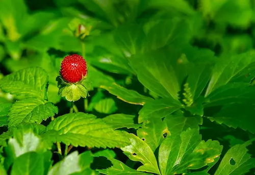

IN LOVE WITH PLANTS
We are passionate about making botanical knowledge accessible to everyone. Digital Herbarium is an interactive web application inspired by the Pokédex from the Pokemon Franchise, bringing the botanical world to your fingertips. Whether you're a student, gardener, or nature enthusiast, this tool provides a modern way to discover and catalog plants with real-time data.
Our Mission
Making botanical knowledge accessible through intuitive search and comprehensive plant information from around the world.

How It Works
Built with HTML5, CSS3, and JavaScript, leveraging the Trefle.io API for comprehensive botanical data on over 400,000 plant species.
Resources & Acknowledgments
Fredericka the Great, Roboto, and Montserrat font families for enhanced typography and readability.
Bootstrap IconsSVG icons including binoculars and trash icons, licensed under MIT.
PixabayFree stock video footage and photography, licensed under Pixabay License.
This project was created as a final assignment for WDD 131 - Dynamic Web Fundamentals at Brigham Young University - Idaho.